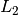
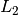

Manual¶
The Snap Machine Learning (Snap ML) Library is designed to offer fast training of generalized linear models and tree based models. The library is under development and currently supports the following machine learning models:
Linear Regression¶
LinearRegression fits a linear model with coefficients to minimize the residual sum
of squares between the predicted responses and the true labels  of the training data.
of the training data.
In order to prevent the model from overfitting you have the option to impose an
 or an  norm penalty on the size of the coefficients.
or an  norm penalty on the size of the coefficients.
Ridge Regression adds an -regularization term to the least-squares loss. Mathematically it solves the following optimization problem:
Lasso adds an
-regularization term to the least-squares loss.
Mathematically it solves the following optimization problem:
In both cases ![X=[{\bf x}_1,...,{\bf x}_n]](_images/math/f2a37e13878f80bd32603a7b911e5e0c5c25ad63.png) denotes the training data matrix with samples in its columns and are the corresponding labels.
The regularization strength is controlled by the regularization parameter ; the larger
denotes the training data matrix with samples in its columns and are the corresponding labels.
The regularization strength is controlled by the regularization parameter ; the larger  the more robust the model becomes to overfitting.
the more robust the model becomes to overfitting.
Note
(Regularization Parameter) In order to find an appropriate regularization parameter we recommend to perform cross validation.
Note
(Feature Selection)
As Lasso regression yields sparse models it can be used to perform feature selection. The sparsity can be controlled by - a larger regularization parameter encourages more sparsity.
Snap ML implements different variants of stochastic coordinate descent [SCD] and stochastic dual coordinate ascent [SDCA] as an algorithm to fit the model parameters  .
In order to optimally support GPUs for training Snap ML implements a parallel asynchronous version of these solvers especially designed to leverage the massive parallelism of modern GPUs [TPASCD].
.
In order to optimally support GPUs for training Snap ML implements a parallel asynchronous version of these solvers especially designed to leverage the massive parallelism of modern GPUs [TPASCD].
To train the LinearRegression model the fit method is used; it takes the training data and the labels as input and stores the learnt coefficients of the model in its coef_ member function.
The regularization type can be specified during initialization using the penalty argument.
The trained model can then be used to make predictions by calling the predict method on unlabelled data.
>>> from pai4sk import LinearRegression
>>> import numpy as np
>>> reg = LinearRegression(max_iter = 100, regularizer = 0.1, penalty = 'l2')
>>> X_train = np.array([[0, 0], [1, 1], [2, 2]])
>>> y_train = np.array([0, 1, 2])
>>> reg.fit (X_train, y_train)
>>> reg.coef_
[ 0.495, 0.495]
>>> X_test = np.array([[3, 3], [0, 1]])
>>> reg.predict(X_test)
[2.97, 0.495]
For more details about the API we refer to the snap-ml API.
Support Vector Machine¶
Support Vector Machine (SVM) is a supervised learning method which can be applied for regression as well as classification.
Currently Snap ML implements SupportVectorMachine (SVMs) with a linear kernel function and offers
regularization to prevent the model from overfitting.
Mathematically it solves the following optimization problem:
where denotes the hinge loss with being the training samples and the corresponding labels. The regularization strength can be controlled by the user through the regularizer parameter.
The larger the more robust the model becomes to overfitting.
Snap ML implements stochastic dual coordinate [SDCA] and the GPU optimized [TPASCD] as an algorithm to train the SVM classifier. SDCA runs on the equivalent SVM dual problem formulation:
with the constraint .
To train the model the fit method is used; it takes the training data and the labels  as input and stores the learnt coefficients of the model in its
as input and stores the learnt coefficients of the model in its coef_ member function. The trained model can then be used to make predictions by calling the predict method on unlabelled data.
>>> from pai4sk import SupportVectorMachine
>>> import numpy as np
>>> reg = SupportVectorMachine(max_iter = 100, regularizer = 1.0)
>>> X_train = np.array([[0, 0], [1, 1], [2, 2]])
>>> y_train = np.array([-1,-1,1])
>>> reg.fit (X_train, y_train)
>>> reg.coef_
[ 0.25, 0.25]
>>> X_test = np.array([[3, 3], [0, 1]])
>>> reg.predict(X_test)
[1,-1]
A full example of training a SupportVectorMachine model in a real application can be found in the IBM® Watson Machine Learning Community Edition (WML CE) distribution under ${CONDA_PREFIX}/pai4sk/. For more details about the API we refer to the snap-ml API.
Logistic Regression¶
LogisticRegression is a linear model for classification. A logistic model is used to estimate the probability of an outcome based on the features of the input data. In order to prevent the model from overfitting or regularization can be used.
Mathematically -regularized Logistic Regression solves the following optimization problem composing of the logistic loss and an regularization term:
Similarly, -regularized Logistic Regression solves the following optimization problem:
where is the training data matrix with samples in its columns and denote the corresponding labels.
The regularization strength is controlled by the regularization parameter ; the larger the more robust the model becomes to overfitting. can be specified by the user through the regularizer input parameter.
Snap ML implements stochastic coordinate descent [SCD] and stochastic dual coordinate ascent [SDCA] as an algorithm to fit the model parameters . In order to support GPU acceleration Snap ML implements a parallel asynchronous version of these solvers especially designed to leverage the massive parallelism of moderne GPUs [TPASCD].
The model can be trained using the fit method which takes the training data and the labels as input and stores the coefficients of the learnt model in its coef_ attribute. This model can then be used to make predictions by calling the predict method on unlabelled data. The regularization type can be specified at initialization using the penalty argument.
>>> from pai4sk import LogisticRegression
>>> import numpy as np
>>> lr = LogisticRegression(max_iter = 100, regularizer = 0.01, penalty = 'l2')
>>> X_train = np.array([[0, 0], [1, 1], [2, 2]])
>>> y_train = np.array([-1,-1,1])
>>> lr.fit (X_train, y_train)
>>> lr.coef_
[0.145, 0.145]
>>> X_test = np.array([[3,3],[-2,1]])
>>> lr.predict(X_test)
[1,-1]
>>> lr.predict_proba(X_test)
[[0.295, 0.705]
[0.536, 0.464]]
A full example of training a LogisticRegression model in Snap ML can be found in the IBM® Watson™ Machine Learning Community Edition (WML CE) distribution under ${CONDA_PREFIX}/pai4sk/*. For more details about the API we refer to the snap-ml API.
Decision Tree¶
Snap ML offers two classes for learning with decision trees: DecisionTreeClassifier and DecisionTreeRegressor for classification and regression respectively.
Trees can either be built either using exact splitting or a histogram-based method [LIGHTGBM] .
When using exact splitting, training is single-threaded and runs on the CPU.
For histogram-based splitting, training can be performed using multi-treads on the CPU or alternatively on a single GPU.
Check the snap-ml API for details about the available options or check out the Tutorials for an application example.
Random Forest¶
Snap ML offers two classes for learning with random forests: RandomForestClassifier and RandomForestRegressor for classification and regression respectively.
Random forests are essentially an ensemble of trees, in which each tree is trained on a bootstrap sample of the training data, and the split at each node in the forest is determined using a different random subset of the available features [RF].
Random forests are usually preferred over a single decision tree as they improve the generalization accuracy of the model, possibly at the expense of interpretability in some applications.
Snap ML offers fast, multi-threaded training and inference of random forests on CPU. Snap ML builds random forests in a highly efficient manner using a novel breadth-first, depth-next tree-building algorithm [SNAPRF]. Training can be further accelerated by enabling histogram-based splitting [LIGHTGBM]. Experimental support for GPU and multi-GPU-accelerated training of random forests is also now offered.
Check the snap-ml API for details about the available options or check out the Tutorials for an application example.
SnapBoost¶
Snap ML now offers a boosting machine, SnapBoost, that can be used for classification and regression.
The boosting functionality is available using the class BoostingMachine and the learning task can be defined by setting the objective parameter to mean squared error (for regression) or logistic loss (for classification).
Like other popular boosting frameworks, SnapBoost performs a form a functional gradient descent to learn an ensemble of decision trees [BOOSTING]. While the resulting ensemble has the same architecture as a random forest, the training algorithm is very different, typically leading to better generalization accuracy. Unlike other boosting frameworks, SnapBoost does not learn a heterogenous ensemble of decision trees. Instead, the maximum tree depth at each boosting round is selected probabilistically, according to a uniform distribution which can be controlled by the user. By tuning this distribution, one may be able to achieve better generalization accuracy than other boosting frameworks on some datasets. SnapBoost supports both example-wise and feature-wise subsampling at each boosting round, as well as L2-regularization as described in [XGBOOST].
Trees can either be built using exact or histogram-based splits (as in [LIGHTGBM]). When using histogram-based splitting, SnapBoost offers multi-threaded CPU and well as acceleration using a single GPU.
A full example of training a SnapBoost model can be found in the IBM® Watson™ Machine Learning Community Edition (WML CE) distribution under ${CONDA_PREFIX}/pai4sk/*. For more details about the API we refer to the snap-ml API.
References¶
- [SCD]
Y. Nesterov. Efficiency of coordinate descent methods on huge-scale optimization problems. SIAM Journal on Optimization, 2012.
- [SDCA]
Shai Shalev-Shwartz and Tong Zhang. Stochastic Dual Coordinate Ascent Methods for Regularized Loss Minimization. Journal of Machine Learning Research, 2013.
- [TPASCD]
Thomas Parnell, Celestine Dünner, Kubilay Atasu, Manolis Sifalakis and Haris Pozidis. Tera-Scale Coordinate Descent on GPUs. Journal on Future Generation Computer Systems, 2018.
- [LIGHTGBM]
Ke, G., Meng, Q., Finley, T., Wang, T., Chen, W., Ma, W., Ye, Q. and Liu, T.Y. LightGBM: A Highly Efficient Gradient Boosting Decision Tree. Advances in Neural Information Processing Systems, 2017.
- [RF]
Breiman, Leo. Random Forests, Machine Learning, 2001.
- [SNAPRF]
Anghel, Andreea, Nikolas Ioannou, Thomas Parnell, Nikolaos Papandreou, Celestine Mendler-Dünner, and Haris Pozidis. Breadth-first, Depth-next Training of Random Forests. Workshop on System for ML at NeurIPS, 2019.
- [BOOSTING]
Friedman, Jerome H. Greedy Function Approximation: A Gradient Boosting Machine. Annals of Statistics, 2001.
- [XGBOOST]
Chen, Tianqi, and Carlos Guestri. XGBoost: A Scalable Tree Boosting System. Proceedings of the 22nd AMC SIGKDD International Conference on Knowledge Discovery and Data Mining, 2016.